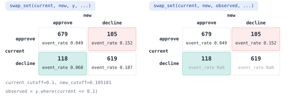
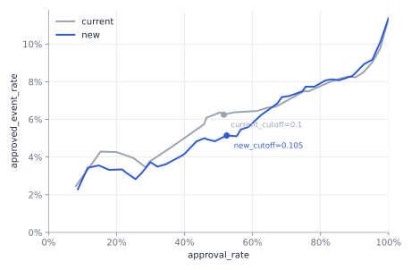
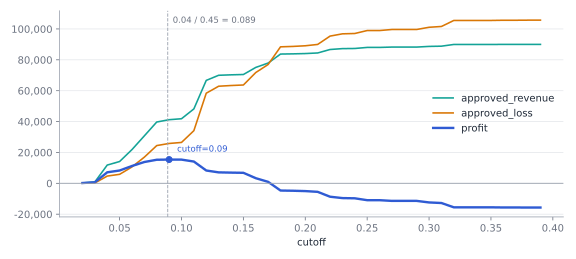

Credit strategy#
A scorecard ranks applicants; a credit strategy decides whom to approve. kivi.strategy supports the decisions that follow: cutoff_table() shows what each candidate cut-off approves, how many bad outcomes it lets through and, with the revenue and losses of each applicant, what it earns, confusion_table() counts the right and the wrong decisions of each cut-off, swap_set() compares the decisions of a current and a new score, and expected_loss() and expected_loss_table() turn PDs, LGDs and exposures into the expected loss of each applicant and of each grade.
The strategy follows Calibration, which gives PDs and grades, and LGD and EAD, which gives the LGDs and EADs of the expected loss, and comes before Policy rules, which measures the rules that decline applicants whatever their score.
Score direction and the approval rule#
As in Model performance, every score is higher for a higher risk, such as a PD. An applicant is approved when the score is at or below the cut-off, so a higher cut-off approves more applicants. A score equal to the cut-off is approved, and tied scores therefore always get the same decision.
Scorecard points run the other way: a policy that approves 600 points or more approves the applicants whose negated points are at most -600. Pass -points and the negated cut-offs, for example cutoff_table(-points, target, cutoffs=[-620, -600, -580]).
PDs of two scorecards#
The examples on this page use the bundled bank data. The data record a marketing response rather than a default, so read target 1 as a default, as in Scorecard. The first 3,000 rows are the development sample and the remaining 1,521 rows stand for the applicants of a later period. Two logistic regressions on WOE values give the PDs of a current scorecard with four variables and of a new one that adds loan and marital:
>>> import numpy as np
>>> import pandas as pd
>>> from kivi.datasets import load_bank
>>> from kivi.selection import logistic_regression
>>> from kivi.woe import woe_table, woe_transform
>>> data = load_bank()
>>> development, applicants = data.iloc[:3000], data.iloc[3000:]
>>> def to_groups(frame):
... groups = frame[["poutcome", "contact", "housing", "loan", "marital"]].copy()
... groups["age"] = pd.cut(frame["age"], [-np.inf, 25, 35, 45, 55, 65, np.inf])
... return groups
>>> dev_groups = to_groups(development)
>>> tables = {
... column: woe_table(dev_groups[column], development["target"]) for column in dev_groups
... }
>>> def to_woe(frame, columns):
... groups = to_groups(frame)
... return pd.DataFrame(
... {column: woe_transform(groups[column], tables[column]) for column in columns}
... )
>>> def fit_pd(columns):
... fit = logistic_regression(to_woe(development, columns), development["target"])
... coefficients = fit["coef"]
... def predict(frame):
... log_odds = coefficients["intercept"] + to_woe(frame, columns) @ coefficients[columns]
... return 1 / (1 + np.exp(-log_odds))
... return predict
>>> four = ["poutcome", "contact", "housing", "age"]
>>> current = fit_pd(four)(applicants)
>>> new = fit_pd([*four, "loan", "marital"])(applicants)
>>> y = applicants["target"]
The new scorecard ranks the applicants a little better:
>>> from kivi.metrics import roc_auc
>>> [round(roc_auc(current, y), 3), round(roc_auc(new, y), 3)]
[0.718, 0.73]
Choosing a cut-off#
cutoff_table() takes the candidate cut-offs and reports, for each, the approved book and what the cut-off rejects. A PD of 1 approves everyone and gives the reference row:
>>> from kivi.strategy import cutoff_table
>>> cutoffs = [0.05, 0.08, 0.1, 0.15, 0.2, 1]
>>> table = cutoff_table(current, y, cutoffs=cutoffs)
>>> table[["approved", "approval_rate", "approved_event", "approved_event_rate"]].round(3)
approved approval_rate approved_event approved_event_rate
cutoff
0.05 328 0.216 13 0.040
0.08 562 0.369 26 0.046
0.10 784 0.515 49 0.062
0.15 1329 0.874 110 0.083
0.20 1410 0.927 120 0.085
1.00 1521 1.000 173 0.114
>>> table[["rejected_event_share", "rejected_non_event_share"]].round(3)
rejected_event_share rejected_non_event_share
cutoff
0.05 0.925 0.766
0.08 0.850 0.602
0.10 0.717 0.455
0.15 0.364 0.096
0.20 0.306 0.043
1.00 0.000 0.000
Each row is a possible policy. A cut-off of 0.10 approves 784 of the 1,521 applicants, 51.5%, and their bad rate of 6.25% is about half the 11.4% of all applicants. It avoids 71.7% of the bad outcomes, but also turns away 45.5% of the good applicants. Raising the cut-off to 0.15 approves 87.4% at a bad rate of 8.3%: the lender gains volume and accepts more risk. Which row to choose is a business decision; the table shows its price.
Column |
Meaning |
|---|---|
|
Applicants with a score at or below the cut-off. |
|
Share of all applicants that the cut-off approves. |
|
Events among the approved applicants and their rate, the bad rate of the approved book. |
|
Share of all events with a score above the cut-off: the bad outcomes the cut-off avoids. |
|
Share of all non-events with a score above the cut-off: the good business the cut-off gives up. |
|
With |
|
With |
|
With both |
The bad rate of the approved book averages over everyone approved. The cut-off itself is better judged by the marginal bad rate, the bad rate of the applicants that a higher cut-off adds:
>>> marginal = np.diff(table["approved_event"], prepend=0) / np.diff(table["approved"], prepend=0)
>>> marginal.round(3)
array([0.04 , 0.056, 0.104, 0.112, 0.123, 0.477])
Suppose a good loan earns a margin \(m\) and a bad loan loses \(L\). A group of applicants with bad rate \(b\) earns \((1 - b)\,m - b L\), which is positive while \(b < m / (m + L)\). With a margin of 1 and a loss of 10 the break-even bad rate is \(1/11 \approx 9.1\%\). The applicants between 0.05 and 0.08 default at 5.6% and pay for themselves, while those between 0.08 and 0.10 default at 10.4% and do not, so 0.08 is the most profitable of these cut-offs. For a well-calibrated PD the break-even rate is itself the PD cut-off; the marginal rates check it against the observed outcomes. With the revenue and the loss of each applicant, cutoff_table adds up the profit of each cut-off itself, as the section on revenue and profit below shows.
An integer cutoffs places the cut-offs at the quantile edges of bin_edges(), so that the rows approve about a fifth, two fifths and so on of the applicants. Tied scores move the steps, because all applicants with the same score get the same decision:
>>> cutoff_table(current, y, cutoffs=5)[["approved", "approval_rate", "approved_event_rate"]].round(3)
approved approval_rate approved_event_rate
cutoff
0.043558 305 0.201 0.043
0.087036 696 0.458 0.057
0.120298 931 0.612 0.064
0.133431 1255 0.825 0.080
inf 1521 1.000 0.114
Confusion matrix#
A cut-off is also a classifier: it predicts an event for every applicant it declines. confusion_table() counts, at each cut-off, how those predictions match the outcomes, with an event as the positive class and a decline as the positive prediction:
>>> from kivi.strategy import confusion_table
>>> confusion = confusion_table(current, y, cutoffs=cutoffs)
>>> confusion[["true_positive", "false_positive", "true_negative", "false_negative"]]
true_positive false_positive true_negative false_negative
cutoff
0.05 160 1033 315 13
0.08 147 812 536 26
0.10 124 613 735 49
0.15 63 129 1219 110
0.20 53 58 1290 120
1.00 0 0 1348 173
>>> confusion[["precision", "recall", "f1", "accuracy"]].round(3)
precision recall f1 accuracy
cutoff
0.05 0.134 0.925 0.234 0.312
0.08 0.153 0.850 0.260 0.449
0.10 0.168 0.717 0.273 0.565
0.15 0.328 0.364 0.345 0.843
0.20 0.477 0.306 0.373 0.883
1.00 NaN 0.000 0.000 0.886

The four counts of confusion_table at the cut-off of 0.10, with an event as the positive class and a decline as the positive prediction. They make up the columns of cutoff_table at the same cut-off: the approved applicants are the true negatives and the false negatives, and the false negatives are its approved_event.#
Column |
Meaning |
|---|---|
|
Events with a score above the cut-off: the bad outcomes it avoids. |
|
Non-events with a score above the cut-off: the good business it gives up. |
|
Non-events at or below the cut-off: the good business it keeps. |
|
Events at or below the cut-off: the bad outcomes it lets through. |
|
|
|
Share of all events that the cut-off declines. |
|
The harmonic mean of |
|
Share of applicants whose decision matches the outcome: declined events and approved non-events. |
A cut-off of 0.10 declines 737 applicants, 124 of them events. It declines 71.7% of the events, and 16.8% of the declined applicants are events, 1.5 times the 11.4% of all applicants. The rows are those of cutoff_table(): recall is its rejected_event_share, false_negative its approved_event, and false_positive divided by all non-events its rejected_non_event_share. The table adds the counts that these shares are made of, and the measures of a classifier:
>>> confusion["recall"].equals(table["rejected_event_share"])
True
roc_table() has the same counts at every distinct score, but its rows flag the scores at or above a threshold, while a cut-off declines only those above it. A row of confusion_table equals the roc_table row with the lowest threshold above the cut-off:
>>> from kivi.metrics import roc_table
>>> roc = roc_table(current, y)
>>> roc.loc[roc.index[roc.index > 0.1].min(), ["cum_event", "cum_non_event"]].tolist()
[124, 613]
These measures depend on the share of events. Approving everyone, the last row, is right about 88.6% of the applicants, one minus the event rate, so among these cut-offs the accuracy is highest for the one that declines nobody. Precision stays low for the same reason. The F1 score is highest at 0.20, which declines 111 applicants, 7.3%, but it counts a declined good applicant and an approved bad one as equally costly. With the margin of 1 and the loss of 10 above, the second error costs ten times the first, and the cut-off of 0.08 that pays most there has an F1 of 0.26. Use these measures to compare scores or to report a classification at a chosen cut-off, and choose the cut-off from the marginal bad rate and the costs, as above.
Unlike swap_set(), confusion_table takes no missing outcomes: remove the applicants whose outcome is unknown, or fill it in with reject inference, before counting.
Swap sets#
A new score changes the decisions of some applicants. At the cut-offs of both scores, swap_set() sorts the applicants into four groups: those both scores approve, the swap-outs that only the current score approves, the swap-ins that only the new score approves, and those both decline. To compare the scores at the same approval rate, give the new score the cut-off that approves as many applicants as the current cut-off of 0.10:
>>> from kivi.strategy import swap_set
>>> approved = int((current <= 0.1).sum())
>>> new_cutoff = float(np.sort(new)[approved - 1])
>>> swaps = swap_set(current, new, y, current_cutoff=0.1, new_cutoff=new_cutoff)
>>> swaps.round(3)
total share known event event_rate
current new
approve approve 679 0.446 679 33 0.049
decline 105 0.069 105 16 0.152
decline approve 118 0.078 118 8 0.068
decline 619 0.407 619 116 0.187

The four groups of swap_set: the swap-outs, in red, that only the current score approves, and the swap-ins, in teal, that only the new one approves. With the observed outcomes, right, the applicants that the current score declines have no known outcome.#
The new score swaps out 105 applicants with a bad rate of 15.2% and swaps in 118 with a bad rate of 6.8%. Because of tied scores, its cut-off approves 797 applicants, 13 more than the current one, and the bad rate of the approved book falls from 6.25% to 5.1%:
>>> cutoff_table(new, y, cutoffs=[new_cutoff])[["approved", "approved_event_rate"]].round(3)
approved approved_event_rate
cutoff
0.105181 797 0.051

The bad rate of the approved book at each approval rate. Up to an approval rate of about 65%, the new score approves a book with a lower bad rate; above it, the two curves run close together, with the new score mostly a little higher. The points mark the cut-offs of the swap set.#
A new score is worth adopting when its swap-ins are better than its swap-outs; the applicants both scores approve or decline do not change. The row shares give the approval rate of each score, for example swaps["share"].xs("approve", level="new").sum() for the new one.
In practice the outcomes of the swap-ins are unknown: the current score declined them, so they never received a loan. Pass a target with missing values for unknown outcomes. They count in total and share but not in known, event and event_rate:
>>> observed = y.where(current <= 0.1)
>>> swap_set(current, new, observed, current_cutoff=0.1, new_cutoff=new_cutoff).round(3)
total share known event event_rate
current new
approve approve 679 0.446 679 33 0.049
decline 105 0.069 105 16 0.152
decline approve 118 0.078 0 0 NaN
decline 619 0.407 0 0 NaN
The swap-outs are known, but the bad rate of the swap-ins is missing, and with it half of the comparison. Reject inference, described in Reject inference, estimates the outcomes of declined applicants from their scores and the outcomes of similar approved ones. Pass the inferred labels, or the augmented sample with its weights, to fill in the table, and treat the result as an estimate: it depends on the assumptions of the inference.
Expected loss#
The expected loss of an exposure is the product of its probability of default, its loss given default and its exposure at default:
The bank data have no loan amounts, so the examples take the average balance as the exposure, with negative balances set to zero, and one LGD of 45% for all applicants. expected_loss() accepts one value or one per applicant for the LGD and the EAD, and keeps the index of a Series:
>>> from kivi.strategy import expected_loss
>>> ead = applicants["balance"].clip(lower=0)
>>> el = expected_loss(new, 0.45, ead)
>>> el.head(3).round(2)
3000 17.38
3001 0.00
3002 181.98
Name: expected_loss, dtype: float64
Pass the expected losses as loss to cutoff_table() to add the expected loss of the approved book:
>>> table = cutoff_table(new, y, cutoffs=cutoffs, loss=el)
>>> table.assign(loss_per_approved=table["approved_loss"] / table["approved"])[
... ["approval_rate", "approved_event_rate", "approved_loss", "loss_per_approved"]
... ].round(3)
approval_rate approved_event_rate approved_loss loss_per_approved
cutoff
0.05 0.189 0.031 5824.612 20.295
0.08 0.462 0.050 24451.010 34.830
0.10 0.494 0.049 26478.520 35.258
0.15 0.763 0.078 63693.305 54.861
0.20 0.910 0.085 89103.859 64.381
1.00 1.000 0.114 125487.469 82.503
Approving everyone carries an expected loss of 125,487, or 82.50 per applicant. A cut-off of 0.10 approves half of the applicants and only a fifth of that expected loss, 35.26 per approved applicant. approved_loss adds up whatever is passed as loss: pass realized losses to see the losses each cut-off lets through, whose difference from the last row is the loss it avoids, or pass the exposures to see the volume it approves.
Revenue and profit#
A cut-off that avoids losses also gives up the revenue of the loans it declines. Pass the revenue of each applicant as revenue, such as the interest margin its loan would earn, and cutoff_table() adds approved_revenue, the revenue of the approved book; with loss as well, it also adds profit, the revenue minus the losses. Below, each loan earns a margin of 4% of its exposure over the year in which the expected loss is measured:
>>> revenue = 0.04 * ead
>>> table = cutoff_table(new, y, cutoffs=cutoffs, loss=el, revenue=revenue)
>>> table[["approval_rate", "approved_loss", "approved_revenue", "profit"]].round(1)
approval_rate approved_loss approved_revenue profit
cutoff
0.05 0.2 5824.6 14117.4 8292.8
0.08 0.5 24451.0 39711.8 15260.8
0.10 0.5 26478.5 41829.9 15351.4
0.15 0.8 63693.3 70492.7 6799.4
0.20 0.9 89103.9 84063.2 -5040.7
1.00 1.0 125487.5 92864.4 -32623.1
>>> float(table["profit"].idxmax())
0.1
Approving everyone loses 32,623, because the margin does not cover the expected loss of the riskiest applicants. The cut-offs of 0.08 and 0.10 both earn about 15,300, and 0.10 earns the most of the six. Per unit of exposure, a loan with a PD \(p\) earns 0.04 and is expected to lose \(0.45\,p\), so it pays for itself while \(p < 0.04 / 0.45 \approx 8.9\%\). For well-calibrated PDs the most profitable cut-off therefore lies near that break-even PD, and a finer grid of cut-offs finds it:
>>> fine = cutoff_table(
... new, y, cutoffs=np.arange(0.02, 0.4, 0.01).round(2), loss=el, revenue=revenue
... )
>>> fine.loc[[fine["profit"].idxmax()], ["approval_rate", "approved_event_rate", "profit"]].round(3)
approval_rate approved_event_rate profit
cutoff
0.09 0.473 0.049 15393.88

Revenue, expected loss and profit of the approved book at each cut-off of the finer grid. The profit is highest at 0.09, next to the break-even PD of 0.04 / 0.45, dashed, and falls below zero from a cut-off of 0.18 on.#
The profit adds up whatever is passed in. With expected losses it is the expected profit of the approved book; with the realized losses of a past cohort, the profit the cut-offs would have earned on it. revenue, like loss, must be non-negative, so put costs such as funding, acquisition or servicing into loss. expected_maximum_profit() measures the profit of the best cut-off of a score when the loss of a default is uncertain, as a share of the loan amount; Model performance describes it.
Expected loss by grade#
expected_loss_table() adds up the exposures and expected losses of each grade or other group. Cut the PDs of the new score at the edges of a master scale, as in Calibration:
>>> from kivi.strategy import expected_loss_table
>>> pd_edges = [0, 0.05, 0.08, 0.12, 0.2, 0.4, 1]
>>> grades = pd.cut(new, pd_edges, labels=list("ABCDEF"), include_lowest=True)
>>> by_grade = expected_loss_table(grades, new, 0.45, ead)
>>> by_grade[["total", "exposure", "expected_loss", "expected_loss_rate"]].round(4)
total exposure expected_loss expected_loss_rate
bin
A 287 352935.0 5824.6120 0.0165
B 415 639860.0 18626.3984 0.0291
C 375 674173.0 33932.5102 0.0503
D 307 434612.0 30720.3387 0.0707
E 92 157964.0 18291.2384 0.1158
F 45 62065.0 18092.3717 0.2915
>>> by_grade["exposure_weighted_probability"].round(4)
bin
A 0.0367
B 0.0647
C 0.1118
D 0.1571
E 0.2573
F 0.6478
Name: exposure_weighted_probability, dtype: float64
The expected loss rate, expected loss divided by exposure, rises from 1.7% in grade A to 29% in grade F. With one LGD for everyone it is the LGD times the exposure-weighted PD; with an LGD per applicant it also reflects the collateral of each grade. The rows follow the grades of the scale, as in calibration_table(), and grades without applicants are left out.
The portfolio totals are the sums of the columns, and its expected loss rate is the ratio of two sums:
>>> total_el = by_grade["expected_loss"].sum()
>>> print(f"EL = {total_el:,.0f}, EL rate = {total_el / by_grade['exposure'].sum():.4f}")
EL = 125,487, EL rate = 0.0541
Comparing each grade’s share of the exposure with its share of the expected loss shows where the losses concentrate:
>>> pd.DataFrame({
... "exposure": by_grade["exposure"] / by_grade["exposure"].sum(),
... "expected_loss": by_grade["expected_loss"] / total_el,
... }).round(3)
exposure expected_loss
bin
A 0.152 0.046
B 0.276 0.148
C 0.290 0.270
D 0.187 0.245
E 0.068 0.146
F 0.027 0.144
Grades E and F hold under a tenth of the exposure but almost 30% of the expected loss. A policy that declines grade F, a PD above 0.4, gives up 2.7% of the exposure and avoids 14.4% of the expected loss; the price of those loans would otherwise have to cover a loss rate of 29%.
Sample weights#
cutoff_table(), confusion_table(), swap_set() and expected_loss_table() take weights, one non-negative weight per applicant, as the functions of kivi.metrics do. Counts, exposures, losses and revenue become sums of weights, and integer weights give the same counts and sums as repeating rows. For cutoff_table and confusion_table this holds on explicit cut-offs: an integer cutoffs uses the weighted quantiles of bin_edges(), which can differ from the quantiles of repeated rows. Use the weights of an outcome-based sample, which keeps all bad outcomes but only some of the good ones, to report approval and bad rates for the whole population.